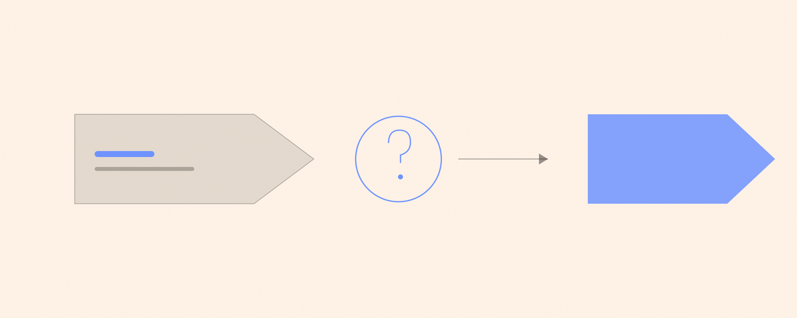
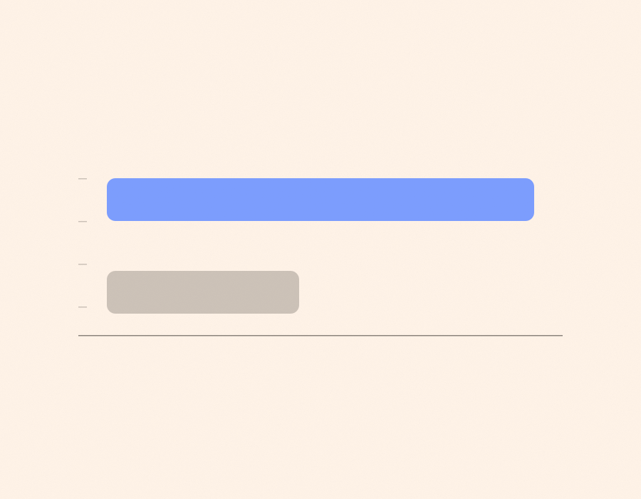

В тексте есть партнёрская ссылка на банк, которым я пользовался для рабочих платежей. Она помечена отдельно.
У моего знакомого мастерская: он делает деревянные столы на заказ. Хорошие столы, дорогие, очередь на два месяца вперёд — и полная тишина в интернете. Заказы приходили по знакомым и по знакомым знакомых, а это плохо масштабируется: рано или поздно знакомые кончаются.
Он дал мне сорок тысяч рублей и сказал: «Сделай рекламу». Полномочий я получил больше, чем понимания, а это, как выяснилось, самая опасная комбинация в мелких делах.
Что я сделал
Собрал за вечер простую страницу: четыре фотографии, цены, форма заявки. Запустил в двух местах. Три недели смотрел в отчёт и радовался каждому новому числу.
К концу третьей недели вышло: тридцать один заказ, восемьдесят четыре тысячи рублей выручки, сорок тысяч потрачено на рекламу. Я пришёл с этим к владельцу мастерской и сказал, что мы в плюсе на сорок четыре тысячи.

Что случилось дальше
Он спросил одну вещь: какая маржа. Маржа была тридцать процентов. Считаем: из восьмидесяти четырёх тысяч настоящих денег в мастерской осталось двадцать пять. Реклама стоила сорок. То есть каждый заказ, который я так гордо принёс, приносил меньше, чем стоило его получить.
За три недели мы аккуратно потеряли пятнадцать тысяч рублей. Не «не заработали» — потеряли. Разница в формулировке здесь ровно та же, что между «я бегал» и «я сходил в зал».
И вторая ошибка, которую я замечаю у себя до сих пор: я не остановился. Мне нравилось, что идёт. Каждый день приходили заявки, каждое утро было что посмотреть. Идти может и в минус, и в минус идти так же приятно, пока не посчитаешь.
Чему это меня научило
Одному. Первым делом надо спрашивать не «сколько пришло», а «сколько от этого останется». Эти два числа отличаются в разы, и решение принимается по второму.

Теперь я считаю цену заказа: сорок тысяч, делённые на тридцать один, — это тысяча двести девяносто рублей за одного клиента. Вот это число что-то значит. Выручка не значит ничего, она просто красивая.
Курс оказался недорогим. Пятнадцать тысяч рублей за то, чтобы больше никогда не путать верхнюю строку отчёта с нижней, — это, пожалуй, самая выгодная моя покупка за год.
Про деньги на всё это
Заказчик платил на счёт, а рекламу я оплачивал картой. Это оказалось удобнее, чем я думал: когда рабочее и личное лежат на разных картах, не приходится в конце месяца разбирать, где чья покупка. Я один раз перепутал и купил себе кофе с рекламного бюджета — на сто восемьдесят рублей, и весь вечер чувствовал себя растратчиком.